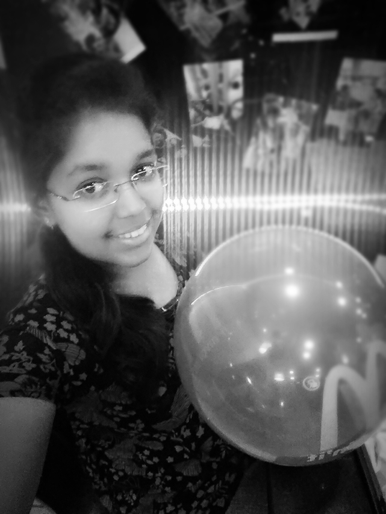

GOGAVALE AKANKSHA GANESH

CAREER OBJECTIVE
To get a job in a renowed company with dedicated efforts and to associate myself with an organisation that gives me a chance to update my knowledge.
EDUCATIONAL QUALIFICATION
- Doing BE(Information Technology) under GTU in Silver Oak College Of Engineering & Technology.
- H.S.C done from GBSE & secured 87%tile.
- S.S.C done from GBSE & secured 98.46%tile.
COMPUTER SKILLS
- HTML from W3School.
- C & C++ language.
- Graphic designing in Corel Draw & Illusrator.
- Learning Python from Codecademy.
STRENGTHS
- Good comunication skills.
- Ability to learn new thing.
- Quick responser.
- Friendly in nature.